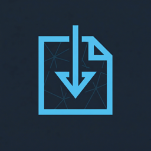
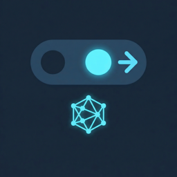
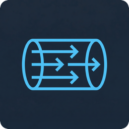
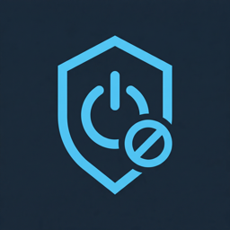

Features
-

Import VLESS Configurations
Import VLESS configurations via URL — single node or subscription. Supports the standard
vless://URL format with Reality protocol parameters. -

Connection Toggle
Turn your proxy connection on or off with a single tap in the Quick Access menu. Real-time status: disconnected, connecting, connected, or error.
-

TUN Mode (Recommended)
Route all system traffic through the proxy with TUN mode. Highly recommended for Gaming Mode — Steam does not respect SOCKS proxy settings, so TUN is the only reliable way to proxy game and system traffic. No extra setup required; just enable it in the plugin.
-

Kill Switch
Optional kill switch blocks all network traffic if the proxy disconnects unexpectedly — your real IP is never exposed.
Installation
Prerequisites
- Steam Deck with Decky Loader installed
- For TUN mode: one-time elevated privileges setup (see below)
Option 1: Plugin Store (Recommended)
- Open Decky Loader settings (Quick Access → ⋯)
- Navigate to Plugin Store
- Search for "DeckRay"
- Click Install
Option 2: Desktop Mode (One-Click)
- Switch to Desktop Mode (Power menu → Desktop Mode)
- Download Install-DeckRay.desktop
- Right-click → Properties → Permissions → enable "Is executable"
- Double-click to run the installer
- Switch back to Gaming Mode; the plugin appears in Quick Access (⋯)
Option 3: Manual Install
- Download the latest release zip file
- In Decky Loader → Settings → Developer → Install Plugin from URL
- Enter the URL to the zip file
TUN Mode (Recommended for Gaming Mode)
In Gaming Mode, Steam does not respect system SOCKS proxy settings — games and most system services ignore it. TUN mode creates a virtual network interface that routes all system traffic through the proxy, making it the only reliable way to proxy traffic in Gaming Mode.
No extra setup is required — just enable TUN in the plugin settings. The plugin runs with elevated privileges and handles everything automatically.
Without TUN, the plugin falls back to SOCKS proxy mode, which works well in Desktop Mode but may not cover games and system services in Gaming Mode.
Usage
Import Configuration
Open the plugin in Decky Loader, enter your VLESS URL in the import field, and click Import. The configuration will be validated and stored.
VLESS URL format: vless://uuid@host:port?params#name
Connect
Use the connection toggle to turn the proxy on. Status shows in real-time: disconnected, connecting, connected, or error. Toggle off to disconnect.
Enable TUN Mode (Recommended)
Enable TUN mode in the plugin settings for reliable system-wide routing — especially important in Gaming Mode, where SOCKS proxy is not enough. Optionally, activate the kill switch for extra safety.
Troubleshooting
Connection fails
- Verify your VLESS configuration URL is valid
- Check network connectivity on your Steam Deck
- Review error messages in the plugin UI
TUN mode not working
- Verify privileges are set up correctly (see TUN Mode Setup)
- Ensure the plugin has required permissions
- Check Konsole for error messages
Kill switch is blocking all traffic
- Reconnect the proxy to deactivate kill switch automatically
- Or manually disable kill switch in the plugin settings
xray-core binary missing
- Download from Xray-core releases
- Place in
backend/out/xray-core - Make executable:
chmod +x backend/out/xray-core